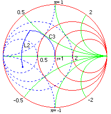

Example: Large Signal Amplifier Design Example: Large Signal Amplifier Design
Example: Large Signal Amplifier Design Example: Large Signal Amplifier Designii) Output Match: The required output power is 20W at 28 Volts supply, therefore the collector resistance is equal to : (Vcc - Vce(sat))^2 / (2 X Pout) which is evaluated to be 15.6 ohms. The collector capacitance, which is in parallel to the load, given by the data sheet is 40 pf. This is equivalent to a resistance of 10.6 ohms in series with an reactance of -7.3 ohms. The figure below shows the chart of the output circuit designed in a similar way as the input circuit.

Frequency = 175 MHz
Load = 10.6- j7.3 ohms
L2 = 25.3 nh
C3 = 35 pf